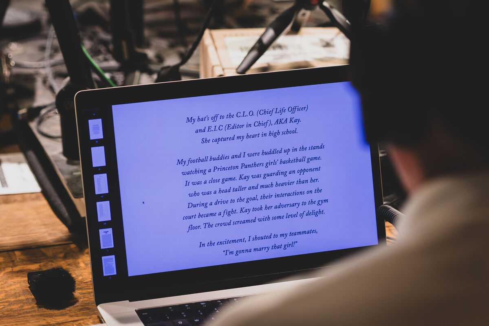
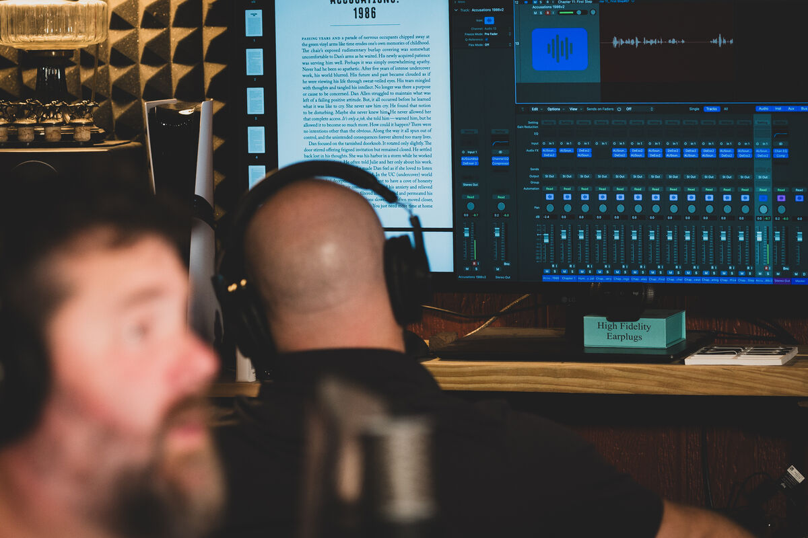
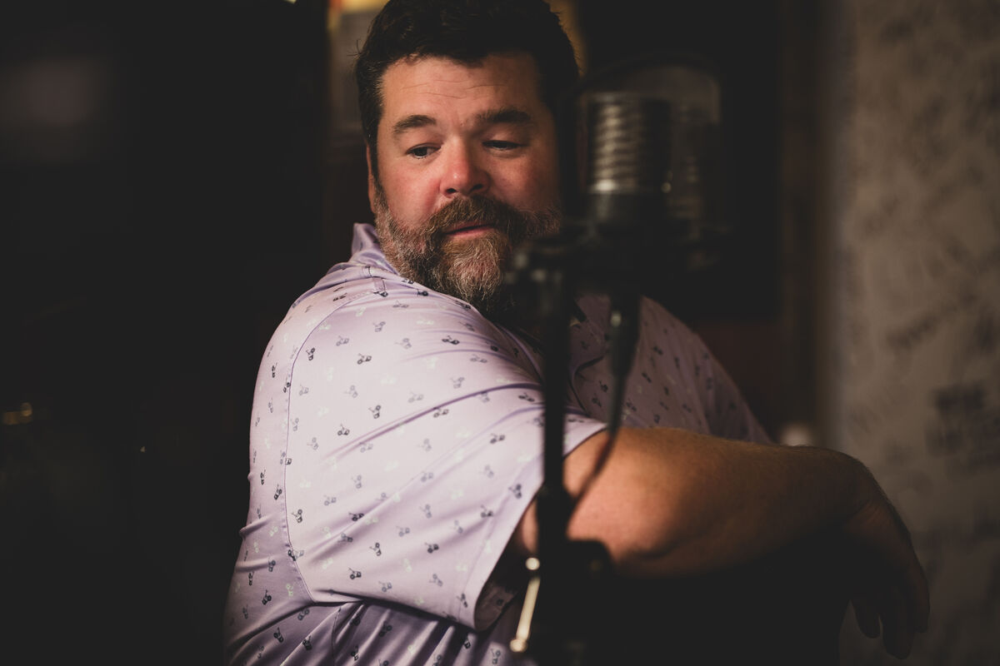

TEXAS RANGER,
WISE COUNTY
The Relentless Pursuit of a Serial Killer
Based Upon a True Story
A companion to The Point: Dawn of the Texas Meth War
Narrated By Chance G. Overton
A Euphony Productions LLC Audiobook
The Relentless Pursuit of a Serial Killer
Based Upon a True Story
A companion to The Point: Dawn of the Texas Meth War
Narrated By Chance G. Overton
A Euphony Productions LLC Audiobook
Set against the backdrop of East Texas in February 1994, this true-crime account begins with the disappearance of seventeen-year-old Lilli Anne, a responsible Lindale High School junior whose late-night shift at Sonic ended like any other — until she never returned home. Her mother's horrifying discovery the next morning launched an intense search involving local law enforcement and the Texas Rangers, but Lilli seemed to vanish without a trace.
Months later, the same darkness surfaced hundreds of miles away in rural Wise County. As night settled over the town square in Decatur, a masked gunman stormed the Supreme Salon in a violent aggravated robbery that shook the close-knit community. Sheriff Bill Bryan, the Wise County Sheriff's Office, and a newly promoted Texas Ranger pursued the suspect with relentless determination. What they uncovered pointed to something far more sinister than a single robbery — a dangerous predator connected to multiple young victims and numerous missing women across the southeastern United States. Evidence suggested many had fallen prey to a homicidal drifter whose crimes stretched far beyond county lines.
Through the resolve of dedicated citizens, investigators, and prosecutors, the case culminated in a conviction in the 271st District Court — an example of the criminal justice system functioning at its strongest. But the story did not end with the verdict. In the wake of the sentencing, hidden corruption within Wise County began to surface, threatening both public trust and public safety. The danger escalated when an attempted assassination targeted Texas Ranger Dan Allen, placing both the Ranger and his young family directly in the crosshairs.
Part murder investigation, part courtroom drama, and part exposé of corruption within the system itself, this gripping account follows the pursuit of justice through fear, violence, and betrayal in small-town Texas.
©2025 N. Lane Akin (P)2026 Euphony Productions LLC
Inside the recording sessions



Visit these sites to purchase Texas Ranger, Wise County